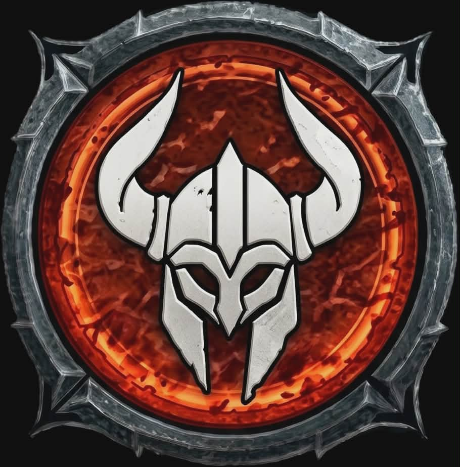
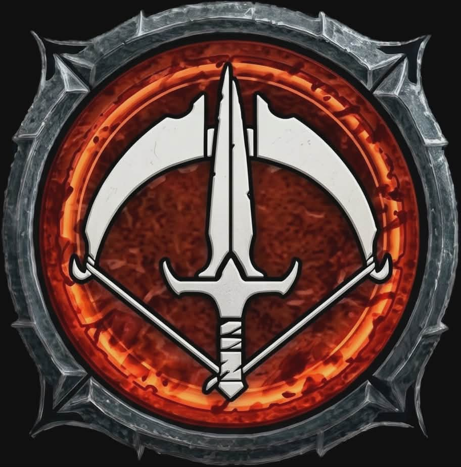
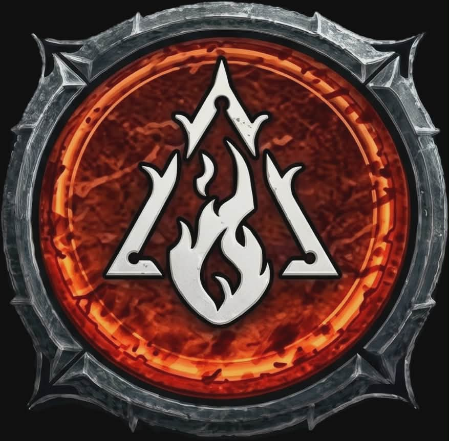
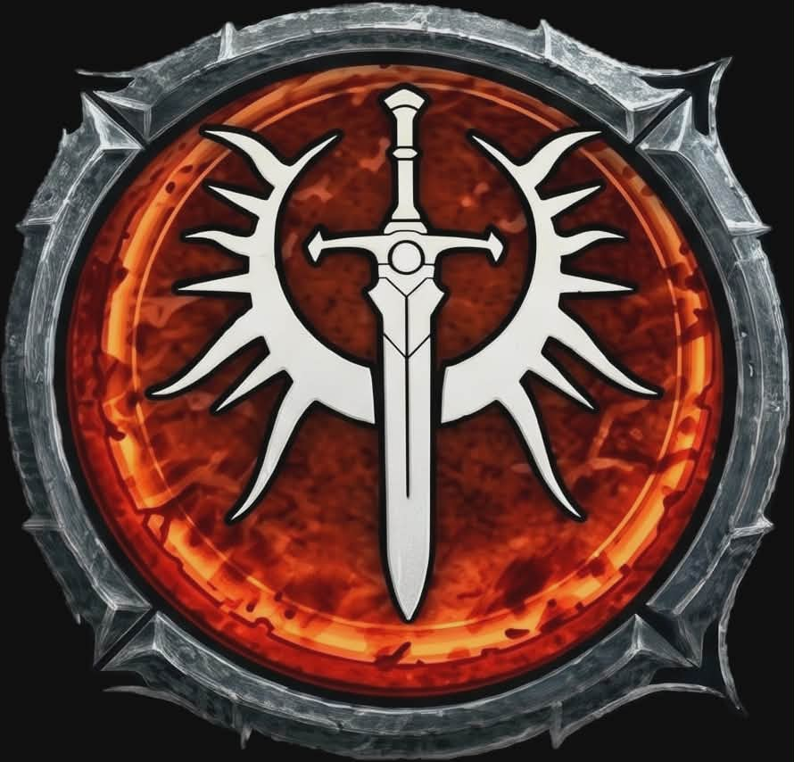
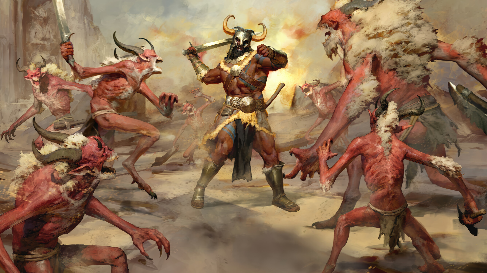
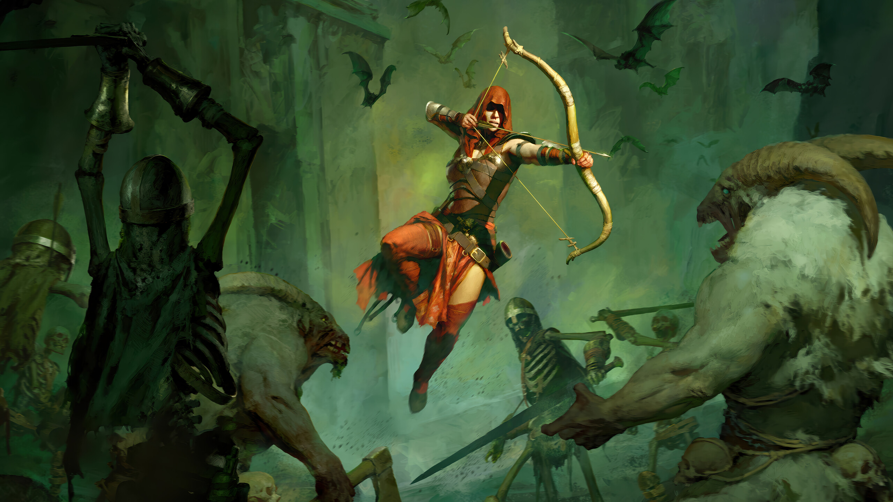
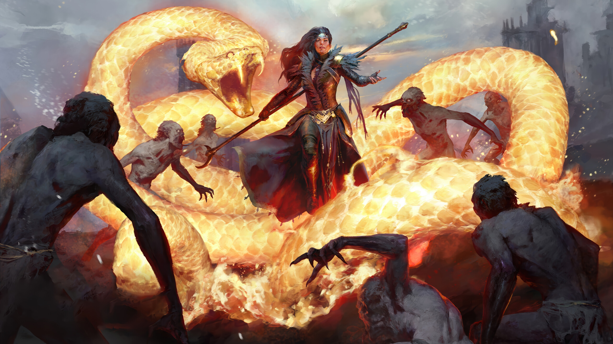
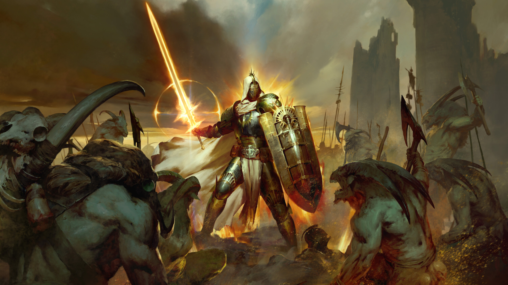

Wybierz swojego bohatera i staw czoła ciemności.





Niezrównany mistrz brutalnej walki wręcz i fechtunku.
Barbarzyńca polega na czystej sile fizycznej oraz furii generowanej podczas zadawania i otrzymywania ciosów. Rusza w wir walki bez wahania, miażdżąc tarcze i rozrywając pancerze wrogów za pomocą potężnych broni dwuręcznych lub szybkich zestawów jednoręcznych.

Zwinny i zabójczy cień eliminujący cele z chirurgiczną precyzją.
Łotr to wszechstronny wojownik, który potrafi płynnie przełączać się między szybką walką sztyletami w zwarciu a eliminacją celów na dystans przy użyciu łuków lub kusz. Wykorzystuje niszczycielskie pułapki, magię cienia oraz nasycenia żywiołami, by kontrolować przebieg bitwy.

Władczyni żywiołów, obracająca armie w popiół lub lód.
Czarodziejka kształtuje i nagina prawa natury do swojej woli. Kontroluje pole bitwy za pomocą trzech niszczycielskich żywiołów: ognia, który spala potwory na popiół, lodu, który zamraża i roztrzaskuje wrogów, oraz błyskawic, paraliżujących całe grupy oponentów jednym wyładowaniem.

Święty obrońca światła i niezłomny bastion sprawiedliwości.
Paladyn to opancerzony wojownik wiary, niosący blask Zakakonu do najgłębszych lochów Piekieł. Wykorzystując ciężkie tarcze, święte korbacze oraz potężne aury modlitewne, wzmacnia swoich sojuszników, jednocześnie oślepiając, osłabiając i paląc demony świętym ogniem niebios.